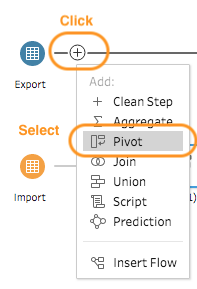

1.0 Introduction
The data visualisation below is taken from the [Department of Statistics Singapore] (https://www.singstat.gov.sg/modules/infographics/singapore-international-trade). It is “mini”-interactive visualisation showing the major trading partner where it is part of an infographics on Singapore International Trade. Intention is to communicate about Singapore merchandise trade performance with major trading partners in 2020. Our task here is to explore means to enhance the visualisation effects through a makeover exercise. The data used in our work is from the sub-section of Merchandise Trade by Region/Market of the Department of Statistics, Singapore.

2.0 Visualisation Critique
2.1 Clarity.
Assuming the intention was to communicate Singapore trade balance with the major trading partners but generally there was a difficulty in discerning the countries association with trade balance in particular for those overlapping at the boundary between net exporter and importers. The critiques were:
Difficulty in Discerning Net Importer or Exporter for Country Closed to Boundary. Difficult to associate countries closed to the boundary (i.e. Japan, EU, Malaysia, Korean and United States) as net exporters or importers as the icons overlapped in the diagram and undermined it positional reference to the boundary. On the web interactive mode, it was still difficult to discern for some of the countries due to high opacity colour that do not ease the interpretation with the boundary line. Eventually, one cannot confidently determined the trade balance information for countries like Japan, EU and Korea even in the web version.
Position of Axes Header and Values. In quick view, the X axis was deemed to be the “Import” parameter as header at the bottom of the graph was normally associated with the X axis. Given the familiarity with the data, it was identified that the header for X axis was “Export”. Axes header positioning couple with similar colour adoption to the values could improve clarity. Moreover, the header should also include the axis unit symbol. i.e. billion or million
Visualisation Title. No title in the display graph (noted there was title on the web version) to provide an overview on what the visualisation intent . Nonetheless, the intent could be discerned from the explanation below.
Explanation in the Last Lead In with “!”. Two sentences in the information box where one remained true in the visualisation while the 2nd on United States do not seem to be truth. If was contradicting for United States given it has higher export as displayed in the visualisation. Its confusing whether United States export has exceeded import only in current context or much earlier. The explanation could be improved to provide better clarity.
2.2 Aesthetic
Generally, it was pleasant and good use of label with similar colour as the bubble. However, it also provided a messy and complicated visual at the areas where the countries overlapped at the boundary. Better treatment could be done to improve aesthetic, such as:
bubble Sizing. The sizing of the bubble for those with larger trade volume might be overwhelming big. Better treatment could be done on the sizing to improve overall aesthetic especially in the overlapping region.
Colour Contrast and Opacity. Better colour contrast and lower opacity to enhance the visual “readability” especially for those overlapping countries like EU and United States. Quick visual look tends to associate United States label with EU.
Label Positioning. Label positioning could be improved to reduce the messy view by positioning closer to the bubble icons. eg United States, EU and Malaysia Labels, they could be swapped in the order and with adjustment to enhance readability and association.
Enhanced Visual Cue. Many good visual cues have been build in. However, the centre point of the bubble do not really aid the interpretation on whether it was net exporter or importer. One option was to has visual indicator either by colour or text on the bubbles or label to explicitly indicate the type.
3.0 Alternate Visualisation
The proposed alternative design is as follow:

3.1 Assumption
3.2 Clarity & Aesthetic
3.2.1 Concerns
4.0 Visualisation Design
The final visualisation design can be found on here in Tableau Public.
5.0 Step-by-Step Guide
5.1 Data Prepartion
| No | Step | Action |
|---|---|---|
| 1 | Use excel to remove all unnecessary data points and information associated with the tables for respective worksheet. Renamed the worksheet to “Import” and “Export” respectively. Keep all the countries parameters and data associated from Jan 10 to Dec 20. | |
| 2 | Load the excel file into Tableau Prep Builder. Drag the worksheets on the left into the canvas. |  |
| 3 | Click the “+” icon for Export and select “Pivot”. |  |
| 4 | Select all the date range field. Drag and drop at the “Pivoted Fields” box. |  |
| 5 | This is what one will see under “Pivot Results”. One could click on the field to verify the pivot. |  |
| 6 | Double click into “Total Merchandised Export…” within the “Variables” column under “Pivot Results” field and replace it with “Singapore”. |  |
| 7 | Click the “+” icon for Pivot1 and select “Clean Step”. |  |
| 8 | Rename the columns in the work areas. i.e. “Variables” to “Country”, “Pivot Names” to “Date”, “Pivot Values” to “Export Values”. Change “Export” from string to number variables. Repeat Step 3 to 8 for “Import” worksheet. |  |
| 9 | Drag either “Pivot” box in the canvas to the other box. A “Join” symbol will appear. Drop the box within. Set the parameters as in the image for join under the “Applied Join Clause”. One can check under “Summary of Join Results” to see mismatched values that will display as red colour. As the intention is to bring all data over for analysis, select “Joint Type:right” by clicking the shaded region in the circle. |  |
| 10 | Similar to step 7, select “Clean” for the “Join” box in the canvas. | |
| 11 | Remove duplicated columns with less variables since it is a Join Right operations. For “Country” column, perform “Clean” to remove extra space. |  |
| 12 | On “Country” Column, select “Split Values” and “Custom Split”. This is to extract the country name from the variable. |  |
| 13 | From the Custom Split dialogue, type blank " " into the separator field and select “2” as field and click “Split”. |  |
| 14 | Two new columns will be created where one has only the country name and the other the remaining variables. Amend the second column to ensure it has only “thousand” and “millions” as parameters. |  |
| 15 | The focus next is to clean up and normalise the “Import” and “Export” columns. First,ensure the view state is in “Detail”. Then, double click into the null row and replaced it with “0”. One notice a “paper clip” symbol beside the new merged row. |  |
| 16 | Then click into “Export” to “Create Calculated Field” by custom. |  |
| 17 | Type in the formulate show. Intent is to normalise the values to baseline since some countries base at million while mostly are in thousand. Remove the previous columns and rename the new column. Repeat the Step 15 - 17 for “Import” column. |  |
| 18 | Create new calculated field with naming “Total Values” which is the sum of import and export values. |  |
| 19 | Click the “+” icon from the “Clean” box in the canvas and select “Output”. Set the parameters for saving the new data set as hyper for subsequent usage in Tableau Desktop. |  |
5.2 Main Chart - Bubble Plot
1| Load the saved hyper excel into Tableau Desktop and drag the saved sheet into the canvas. Create calculated new field from Import and Export Variables to determine the new variables of Import and Export for year 2019 and 2020 respective. eg “Import 2019”. Multiplied by 1000 to account for the normalised value of “thousand” (removed in Step 9) Step 3 could also be used to instead of this step by pivoting the variable by year.|
5.3 Supporting Chart - Gant & Area Chart
5.4 Trending Chart - Horizon Chart
5.5 Interactive Dashboard